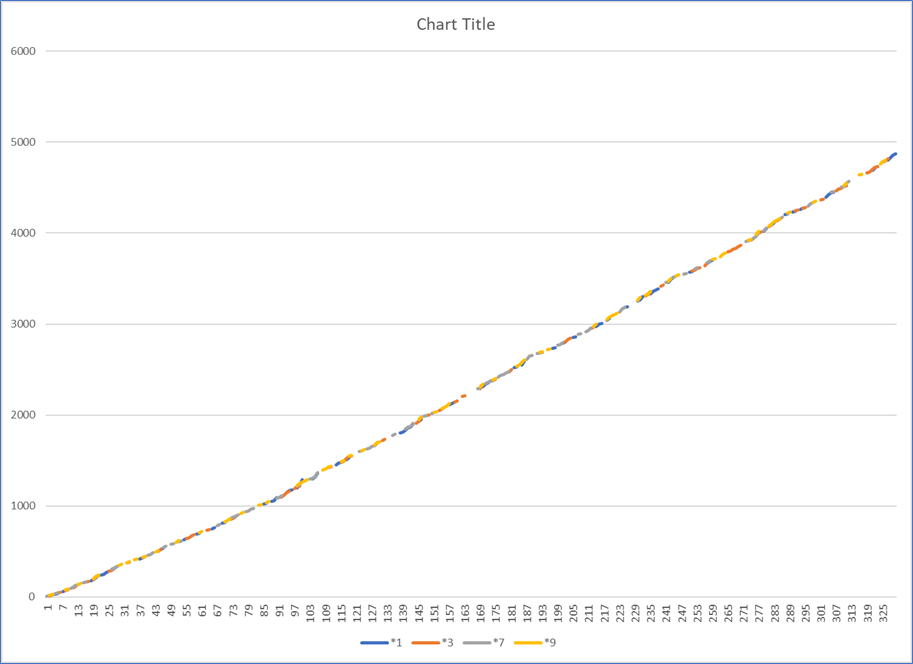

To the start.
When we count , we start at 0 and go up to 9.
0 , 1 , 2 , 3 , 4 , 5 , 6 , 7 , 8 , 9.
All numbers will end with one of these digits. Hence the term *wildcard. By inspection *2 , *5 only happen once as a prime. All the even numbers *2 , * 4 , *6 , *8 , and *0 are all factors of 2. We can sort out these numbers first.
The numbers that are left are *1 , *3 , *7 , *9. All prime numbers except 2 , 3 , 5 ; will end with these *wildcard digits.
Grouping PS (Prime Suspect) numbers by the *wildcard will give the image below. Each row is ten apart. The start is wi= thunits’ digits then 10’s then 100’s.

Image here
A subset with only the prime number listed by groups of 10. A very quick and easy pattern can be seen. Two on and one off
